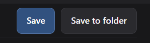

Save a request
Press Save to save the current request under All requests. Use Save to folder to put it in a selected folder.
 apidesk
apideskChoose whether a request should be saved on its own, placed in a folder, or copied into a collection.
Press Save to save the current request under All requests. Use Save to folder to put it in a selected folder.
Open the collection's plus button and choose saved requests to add. APIDesk creates a separate copy inside that collection.
A collection request is a copy. Renaming, editing or deleting that copy does not change or remove the original request outside the collection.
Collection copies can use the collection's shared variables, headers, authentication and settings. The original request remains in All requests or its folder.
